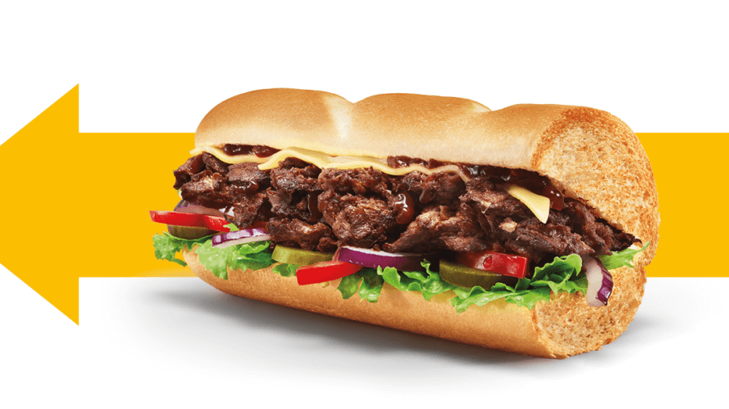

Philly Beef

Indulge in the classic Philly Beef sandwich, loaded with thinly sliced,
seasoned beef, melty cheese, and sautéed green peppers and onions for
that authentic Philly taste. Perfectly toasted and ready to delight
your taste buds.
Customizable Toppings: Enhance it with fresh jalapeños, mushrooms, or
pickles for an extra kick. Pair it with your favorite sauces like
ranch, BBQ, or garlic aioli to make it your own.
Ingredients:
- Freshly baked bread (choice of type)
- Thinly sliced beef
- Cheese (choice of type)
- Sautéed green peppers and onions
- Optional: jalapeños, mushrooms, pickles, sauces
Steps:
- Select your bread and slice it open.
- Cook the thinly sliced beef until tender and flavorful.
- Sauté green peppers and onions until soft.
- Layer the cooked beef onto the bread.
- Add sautéed peppers and onions on top of the beef.
- Place cheese slices on top and toast the sandwich until the cheese melts.
- Add optional toppings and sauces as desired.
- Serve hot and enjoy your Philly Beef sandwich!